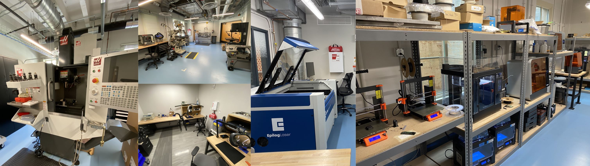

Custom Robots
I have worked on the development of many custom robots encompassing the likes of survey drones, high speed outdoor autonomous cars, omnidirectional robots, magnetic wall-driving inspection robots, and more. Through this experience, I have gained a significant set of skills that allow me to aproach a wide range of problems and develop appropriate solutions.
Wombot

Wombot is an oil and gas tank inspection robot. This robot's purpose is to magnetically drive along the inside of tank walls and inspect the tank seal for any damage or other issues. This robot was developed along with a group in the Nuclear Robotics Lab (NRG) at UT Austin which grew into the startup company Pike Robotics. Throughout my involvment with this project, I was responsible for a number of hardware designs including the magnetic wheels, a sensor aparatus, general component design and layout, as well as in person testing and failure analysis at an oil and gas facility in Oklahoma.
Throughout the development of Wombot, I gained significant experience in design and redesign of components for manufacturability, simplicity, and robustness. I used my knowledge of components and manufacturing to aid in the selection of many of the parts on the robot including motors, sensors, and build materials. I also gained experience in the design of custom components for specific applications. This included the design of the magnetic wheels, the sensor aparatus, and the shell. Additionally, I was able to work on the process of preparing the cabin for safety pressurization to meet strict codes for inspection devices.
Cobot
The Cobot robot is a custom omnidirectional robot platform. The Cobot is used for research on localization, perception, and human interaction in indoor environments at UT. It is equipped with a depth sensor, a monocular camera, a 2d LiDAR scanner, an onboard laptop with a graphical user interface for human interaction.

My role in the Cobot was primarily upgrades to the electrical systems as well as adding aditional capabilities, such as adding a robot arm in the form of a Kinova Gen3. This process involved the design of the physical mounting hardware, the redesign of the electrical system to compensate for the additional power requirement, and manufacturing all of the necesary additional components.
BWI Bots
The BWI bots are a series of robot platforms built on top of the Stanley Robotics Segway RMP units. These robots are primarily used for research in hallway navigation, human-robot-interraction, and service robotics. The BWI bots are equipped with a suite of sensors including a 2d LiDAR scanner, a 3d LiDAR scanner, and a depth camera.

The purpose of the BWI bots is primarily for hallway navigation, so throughout my time with the associated lab, I worked to run the BWI bots throughout the building hallway autonomously while avoiding passerby people and other robots. These robots were often demonstrated when visitors came to the lab as they would be able to run for long amounts of time without issue. My contribution to this project helped to maintain the long-term goal of "living with robots" and having robots that can operate in human environments. I also did work to improve and maintain hardware systems on the robots throughout my time working with them.
Pond Hopper
The Pond Hopper was a semi-autonomous drone that my Senior Capstone team designed and built while I was at Texas A&M. This drone was designed to be able to take off and land on water, as well as be able to navigate autonomously to a set of GPS coordinates. Additionally, once the drone landed in a body of water, it would take a series of measurements and samples of the water for the purpose of testing for mosquito larvae and breeding conditions in a given body of water.

For this project, I served as the Project Manager of my team. This role meant I had a strong understanding of various aspects of the robot including software, mechanical, and electrical design. I was also responsible for the presentation of our project and maintaining a strong communicative relationship with our sponsor and client. This experience taught me alot about the importance of communication as well as time and project management in a professional environment.
Work with Existing Robot Platforms
In addition to my efforts in developing custom robots, I have also had significant experience with existing robot platforms. Many of these platforms come in a working state, but require additional work to be done to make them suitable for research purposes. Often times, the requirements for a robot might even change over time so further hardware and software modifications must be made for them to continue to be useful for research.
Boston Dynamics Spot
One of the existing platforms that I have worked with is Boston Dynamics' Spot quadraped robot. The Spot quadraped is used for research on campus-scale long-term autonomy at UT. It is equipped with LIDAR, a multi-directional suite of cameras, and is able to traverse terrain that is probitive to wheeled robots.

My involvment in the Spot was primarily in designing and integrating the sensor and compute suite located on the back of the Spot. I also assisted researchers in calibrating sensors and running demonstrations for visitors when they came to visit the facilities. Additionally, I have helped multiple other Spot users across research groups and universities to mimic the sensor suite that I developed for their own research purposes. Through my work with Spot I gained experience in efficient sensor integration, designing of hardware for research experiments, and long-distance design collaboration and communication.
Clearpath Husky and Jackal
Other existing platforms I have worked with are the Clearpath Husky and the Clearpath Jackal. Both of these robots are 4-wheeled rugged driving platforms that are used for research on campus-scale long-term autonomy at UT. The Husky is a larger robot that is able to carry a more signifcant payload and drive over rougher terrain. The Jackal is smaller and is able to drive faster and more precisely than the Husky. Both robots are equipped with LIDAR, a multi-directional suite of cameras, as well as GPS and IMU units for campus-scale navigation.
My work on these platforms primarily consited of adding and adjusting the sensor suites, making hardware modifications for various research projects, and performing routine maintenance and repairs. I also assisted researchers in calibrating sensors and running demonstrations for visitors when they came to visit the facilities.
Rapid Fabrication and Shop Management
At Texas Robotics, I was also responsible for the operation, training, and maintenance associated with a Rapid Prototyping lab, a Machine Shop, and an Electronics Shop. These shops hosted many different users throughout my time at UT, and I was responsible for ensuring that all users were properly trained and that all machines were properly maintained. I also worked to develop and implement new training procedures and safety protocols for the shops.
Shop Experience
Through my work running various fabrication shops, I have gained proficiency with many different fabrication machines including the following:
- FDM 3D Printers
- SLA 3D Printers
- Carbon Fiber Composite 3D Printers
- Laser Cutting
- 3D Scanners
- Hand and Surface Mount Soldering
- Use of Electrical Analysis Equipment
- CNC Machining
- Metal Shop General Equipment
- Wood Shop General Equipment
For any questions on any of my Featured Projects or related experience, please feel free to reach out to me at keith.fritz@me.com